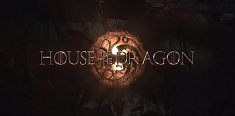

House of Dragons
House of the Dragon (no Brasil: A Casa do Dragão) é uma série de televisão de drama e fantasia medieval norte-americana criada por Ryan J. Condal e George R. R. Martin para o canal HBO. O desenvolvimento da série foi realizado por Condal e pelo diretor Miguel Sapochnik,[2] com base em eventos narrados na segunda metade do romance Fire & Blood (2018), escrito por Martin. A série é uma prequela de Game of Thrones (2011–2019) e tem como enredo a disputa dos meios-irmãos Rhaenyra Targaryen e Aegon II pela posse do Trono de Ferro dos Sete Reinos de Westeros.[3] House of the Dragon estreou em 21 de agosto de 2022[4][5] e logo se tornou a maior estreia de uma série na história do canal HBO em solo americano, atraindo quase 10 milhões de telespectadores em todas as suas plataformas.[6] Além disso, a série também recebeu inúmeras críticas positivas de especialistas do entretenimento, sendo considerada por alguns melhor ou similar a série título da franquia.[7]
Premissa
Cento e setenta e três anos antes de Game of Thrones, os Sete Reinos estavam no auge da prosperidade e riqueza durante o governo de Viserys I Targaryen, que já reinava por nove anos após suceder seu avô, o velho rei Jaehaerys, o Conciliador. Viserys é pai de Rhaenyra, uma jovem bastante orgulhosa e teimosa, mas com um carisma, beleza e inteligência que a levaram a ter o respeito esperado para uma princesa. Há também o príncipe Daemon Targaryen, o irmão sagaz e violento do rei que tem uma desavença amarga com sir Otto Hightower, o Mão do Rei. Daemon é o herdeiro aparente de Viserys, mas sua posição é ameaçada quando a esposa de seu irmão, a rainha Aemma Arryn, fica grávida novamente e presume-se que seu bebê seja um menino, mas, a rainha acaba morrendo no parto com a criança.[10] Viserys é então influenciado por Otto a nomear sua filha Rhaenyra como herdeira do trono e colocar Daemon de lado na linha sucessória. Porém, ao passar de vários anos, o rei Viserys casa-se novamente e acaba tento outros filhos com Alicent Hightower, filha de Otto, o que logo põe a questão de sucessão em dúvida, já que a tradição sempre favorece o herdeiro masculino.[11] A situação fica ainda mais desfavorável para Rhaenyra quando seus três filhos tem a legitimidade deles questionada pela rainha Alicent, causando um atrito maior entre as duas mulheres que uma vez já foram melhores amigas na adolescência.[10][11][12]
Epsódios
| N° | Título | Dirigido por | Escrito por | Transmissão original | Audiência nos EUA (em milhões) |
|---|---|---|---|---|---|
| 1 | Os Herdeiros do Dragão | Miguel Sapochnik | Ryan Condal | 23 de agosto de 2022 | 2.17 |
| 2 | O Príncipe Canalha | Greg Yaitanes | Ryan Condal | 28 de agosto de 2022 | 2.26 |
| 3 | O Segundo de Seu nome | Greg Yaitanes | Gabe Fonseca & Ryan Condal | 4 de setembro de 2022 | 1.75 |
| 4 | O Rei do Mar Estreito | Clare Kilner | Ira Parker | 11 de setmebro de 2022 | 1.81 |
| 5 | Iluminamos o Caminho | Clare Kilner | Charmaine DeGraté | 18 de setembro de 2022 | 1.83 |
| 6 | A Princesa e a Rainha | Miguel Sapochnik | Sara Hess | 25 de setembro de 2022 | 1.86 |
| 7 | Derivamarca | Miguel Sapochnik | Kevin Lau | 2 de outubro de 2022 | 1.88 |
| 8 | O Rei das Marés | Geeta V. Patel | Eileen Shim | 9 de outubro de 2022 | 1.73 |
| 9 | O Conselho Verde | Clare Kilner | Sara Hess | 16 de outubro de 2022 | 1.56 |
| 10 | A Rainha Negra | Greg Yaitanes | Ryan Condal | 23 de outubro de 2022 | 1.85 |
Desenvolvimento
O anúncio da produção da série derivada de Game of Thrones ocorreu em 29 de outubro de 2019, durante um evento da WarnerMedia, em que a empresa apresentou as principais novidades da nova plataforma de streaming HBO Max.[30] A HBO logo encomendou a produção de 10 episódios completos para a primeira temporada da série.[31] O presidente de programação da HBO, Casey Bloys, afirmou que estava animado para expandir o universo da saga A Song of Ice and Fire para a televisão.[32] A criação da série é de Ryan Condal, co-criador da série Colony, que também atua como showrunner ao lado de Miguel Sapochnik, ganhador do Emmy de melhor direção por sua contribuição em Game of Thrones.[33]
Escolha de elenco
A escolha do elenco iniciou em julho de 2020. O ator Paddy Considine foi escalado em 5 de outubro de 2020 para interpretar o Rei Viserys I.[43][44] Em 12 de dezembro de 2020, Olivia Cooke, Matt Smith e Emma D'Arcy foram escalados para interpretarem Alicent Hightower, Daemon Targeryen e Rhaenyra Targaryen, respectivamente.[45][46] Mais quatro atores foram escalados para a série em 11 de fevereiro de 2021, Steve Toussaint, Rhys Ifans, Eve Best e Sonoya Mizuno. Taussaint ganhou o papel de Lord Corlys Veralyon, enquanto Ifans, Best e Mizuno serão Otto Hightower, Rhaenys Targaryen e Misarya respectivamente.[47] Em abril, Fabien Frankel se juntou ao elenco como Ser Criston Cole. Em maio, Graham McTavish foi visto no set com figurinos. Emily Carey e Milly Alcock foram adicionadas ao elenco em julho de 2021 e serão as versões jovens de Rhaenyra e Alicent.[48]